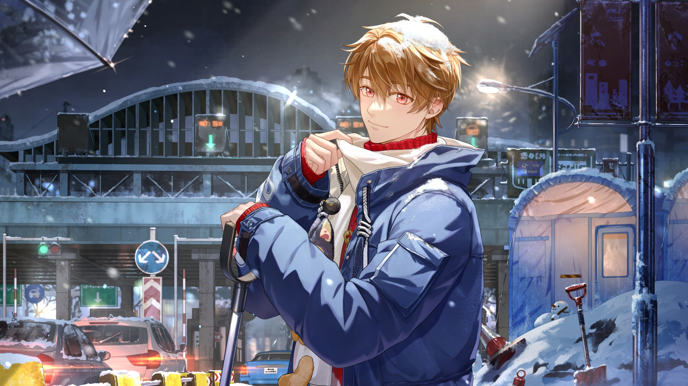

📸 Luke Pearce | 夏彦 📸

Introducing my sunshine, my pookie, my light in the dark.
When I first saw Luke and his sunshine yellow color scheme, I couldn't help but smile.
When I found out he was a detective who loved photography and fixing old antiques, my heart melted.
When I found out his golden retriever personality was hiding something darker, something more complex,
I felt seen.
The more I learned about his story and his struggles, the more I loved him. His light is so bright despite how
bleak things get, and it's so admirable. As his story developed, we grew together, and his hope gives me hope.
Here's how to make a sunflower that can grow in even the coldest winters:
🌻 Ingredients 🌻
- Mysterious Chronic Illness
- Sherlock Holmes Special Interest
- Poetry Books
- Private Detective Agency
- Startling Lack of Self-Preservation
- Inner Child in Desprate Need of Healing
- Guilt Complexes That Have Guilt Complexes
- Vintage Film Camera
- Protective Streak a Mile Wide
- Somehow, A Stubborn Hope for a Better Tomorrow
🧬 Instructions 🧬
- Lose your parents at a frighteningly young age.
- CAUTION: This will shape the rest of your life.
- Move in with your childhood friend.
- Get
groomedrecruited by the government at a concerningly young age.
- WARNING: THIS WILL SHAPE THE REST OF YOUR LIFE.
- Lose yourself becoming the perfect tool.
- CAUTION: Basing self-worth on usefulness is ill-advised.
- Break every NSB record you possibly can.
- Be sole survivor of toxic chemical exposure.
- Return home for additional treatment.
CAUTION: Hiding is ill-advised.
- Reunite with your childhood friend.
- CAUTION: Golden Retriever Personality will only take you so far.
- Join the NXX Special Investigation Team.
- REMINDER: You deserve to be happy.
- Do whatever you can to heal yourself.
- CAUTION:Listen to Aaron's warnings.
- Do not listen to Aaron's warnings.
- WARNING: BASING SELF-WORTH ON USEFULNESS IS ILL-ADVISED.
- Narrowly avoid losing what little you have left.
- CAUTION:Additional mistakes could be devastating.
- Accept NSB reprimand.
- Pick up the pieces.
- REMINDER: You deserve to be happy.
Luke Pearce was created by miHoYo and is published globally by Cognosphere Pte. Ltd.
🪄 Niou Masaharu | 🌟 Home | 👑 Xavier Shen